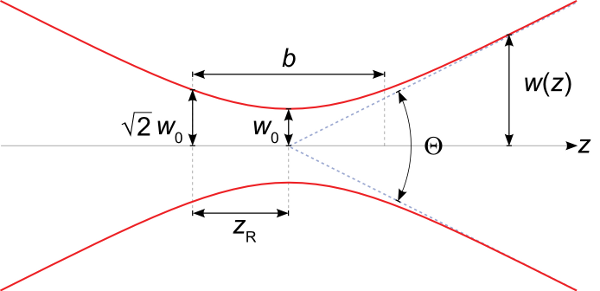

Can my laser beam be collimated?
The fluorescence microscopy setup in my lab requires quite a bit of power. The minimum irradiance requirement is greater than 1 kW per square centimeter, and this must cover an area spanning a few tens of microns across after focusing through the objective. When I was designing the setup, the highest priority was placed on finding a cheap laser with as much power as possible at a wavelength of 647 nm; I considered all other qualities of the laser of secondary importance.
Just like everything else in science, I have learned a very good lesson from this experience. The laser I decided to purchase is a 800 mW BrixX laser from Omicron. The cost is under $10,000, which I consider to be a pretty good deal for the amount of power it puts out. There is no fiber-coupled version, but all of our lasers are free space anyway so I did not consider this to be a big problem. The beam is astigmatic, which is to be expected from a high power laser diode.
The astigmatism is not necessarily a big problem for me, though. What is surprising to me is how difficult it is to keep the beam collimated over large distances, that is, to keep it roughly the same size as it propagates. My application requires a fairly small beam size since the exit pupil of the objective is only 6 millimeters in diameter. With M-squared values direct from the laser of 12 and 25, it is quite difficult to keep the beam collimated for a long enough distance to steer the beam through all the optics and to keep it small enough to prevent overfilling the objective's exit pupil and losing power.
What I have learned from this is that free-space diode lasers, and more generally multimode laser beams, require extra consideration to ensure that they will stay collimated in long setups.
So, how can I predict the distance over which my beam can stay collimated to better judge how well it will work for my setup? The first thing to realize is that no beam can stay collimated forever. Real laser beams experience diffraction, which causes them to spread as they propagate. This means that the first thing I should do is to consider the distances spanned by the beam paths. In a microscopy setup, this path will probably not be longer than a couple meters. In mine, it's roughly two meters since I am combining a number of laser beams together and need the extra space.
Once I identify the length scale over which the beam should stay collimated, I need to examine the beam parameter that is best associated with collimation. For a pure Gaussian beam, this parameter is the Rayleigh range. The Rayleigh range is the distance between the beam waist and the point where the cross-sectional area of the beam has doubled, or, equivalently, to the point where the radius of the beam has increased over the waist radius by a factor of the \(\sqrt{2}\). For a pure Gaussian beam with a waist radius of \(w_0\) and a wavelength of \(\lambda\), the Rayleigh range is given by the equation
\begin{equation*} z_R = \frac{\pi w_0^2}{\lambda} \end{equation*}It is represented by the symbol zR in the figure below from Wikipedia. The total distance over which the beam will stay collimated is represented by b and is just twice the Rayleigh range.

The Rayleigh range of a Gaussian laser beam should therefore be larger than the characteristic distance of my setup that I identified in the previous step. But what about multimode beams like the one from my laser diode? This is where the concept of an "embedded Gaussian" comes into play. (For more information about this idea, see this tutorial by Tony Siegman.) I can predict the collimated distance by computing the Rayleigh range of an ideal Gaussian beam, and then divide it by the M2 parameter for the beam.
Let's take an example using numbers from my own laser. I will first pretend there are no collimating optics in the laser, which is not true but will serve as a good example as to why diode lasers without collimating optics are not good for free space setups. From the laser's spec sheet, I know that the M2 value in the ``bad'' direction is 25 and that its waist size, which is probably half the size of the diode in one principle direction, is 107 microns. Using the above equation, I get a value of 56 centimeters, which means that an ideal Gaussian beam with these specs will stay collimated over about half a meter.
However, my real multimode beam will have a Rayleigh range that is smaller than this value by a factor of 25, which is only about 2 centimeters. For this reason, diode laser beams almost always have collimating optics; the beam from the diode itself is highly divergent.
Returning to my own setup, if I resize the beam using a telescope to have a waist radius of 2 millimeters so it almost entirely fits inside the objective's exit pupil, the Rayleigh range of the embedded Gaussian beam will be almost 20 meters, which is pretty long. The real beam, however, will have a Rayleigh range of about 780 millimeters meters due to the high M2 value. Practically, this means I have about one meter of collimated laser beam with which to work since I have double the Rayleigh range of collimated distance, but really I want the beam to travel less distance than this.
Fortunately I can shrink the beam path enough that this should not be a problem, but it does serve as a very good lesson when looking for lasers for a microscopy application.